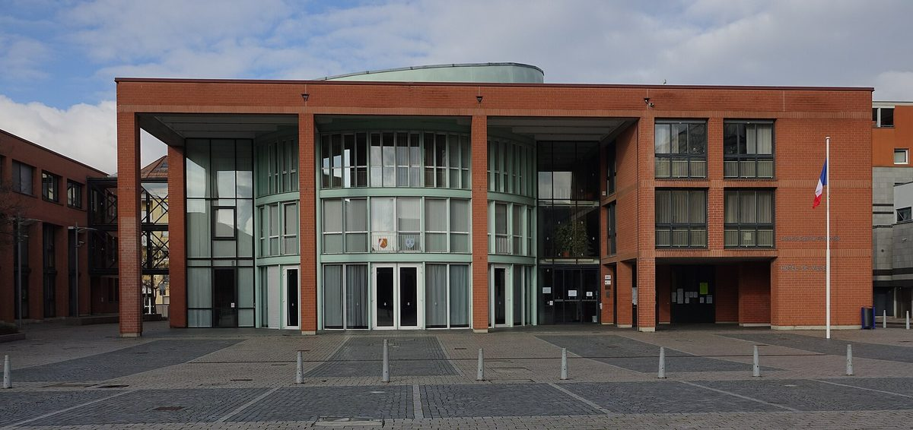

프랑스 알자스 '세 나라 국경' 주민 4명, 시민에너지 모임 EC3F 꾸려…한 주 108유로 출자로 지붕 태양광 공동 소유 추진

2022년 생루이 광역연합 설명회에서 처음 만나 2023년 말 독립, 시민 협동조합 '에네르지 파르타제 앙 알자스'의 지역 모임으로 활동…한 달에 한 번 모여 태양광 올릴 지붕 찾고 집단 자가소비 사업 준비
프랑스·독일·스위스 국경이 만나는 알자스 남부 '세 나라 국경' 지역에서 주민 4명이 시민에너지 모임 'EC3F(세 나라 국경 시민에너지)'를 꾸려 주민 출자로 지붕 태양광을 공동 소유하는 일을 추진하고 있다. 회원은 코칭그 부시장 베르트랑 젤(Bertrand Jehl), 빌라주뇌프 시의원 프랑시스 델로피탈(Francis Delhopital), 프랑크 마장디(Franck Magendie), 도미니크 콜브(Dominique Kolb)로, 코칭그·빌라주뇌프·위낭그·켐스에 사는 이들은 하는 일이 모두 다르고 2022년 9월 전에는 서로 알지 못했으며 모두 자원봉사로 활동한다. 모임의 출발점은 생루이 광역연합(Saint-Louis agglomération)이 지역 에너지 단체 알테르 알자스 에네르지(Alter Alsace énergies)에 도움을 청해 2022년 9월 28일 슐리어바흐 마을회관에서 연 시민에너지 공개 설명회였고, 참가자들은 그해 12월 리디스하임의 한 학교 지붕에 지역 단체가 세운 시민 태양광을 견학한 뒤 2023년 말 단체 지원이 끝나면서 스스로 모임을 꾸렸다. EC3F는 별도 법인이 아니라 시민 재생에너지 생산 협동조합 '에네르지 파르타제 앙 알자스(Énergies partagées en Alsace, EPA)'의 지역 모임으로, 주민이 한 주 108유로인 주식을 하나 이상 사서 조합원이 되면 태양광 발전소의 공동 소유자가 되고 EPA 주주로서 주요 결정에도 참여할 수 있다. 회원들은 한 달에 한 번 모여 태양광을 올릴 지붕을 찾고 지역 행사에서 재생에너지를 알리고 있으며, 곧 에징그에서 시의 지원을 받아 공개 설명회를 열고 12월 5~6일 에징그 성탄 장터에도 나갈 예정이다. EPA 운영위원 레몽 로트(Raymond Roth)는 이 모임이 생산한 전기를 이웃이 나눠 쓰는 집단 자가소비 사업을 맡기를 바란다며, 그러려면 소비 배분을 관리할 법인과 주주 모집, 투자자 확보가 필요하다고 말했다.
시민에너지 관점
자원봉사자 네 명이 한 주 108유로 출자를 내걸고 지붕을 찾아다니는 모습은 작아 보이지만, 지자체 설명회가 판을 깔고 시민 모임이 독립해 지역 협동조합의 지부로 자리 잡는 과정은 시민에너지가 자라는 길을 그대로 보여 준다. 설비 용량도 정해지지 않은 작은 모임이 무슨 힘이 있느냐는 물음이 나올 수 있지만, 같은 그랑테스트 지역의 시민에너지 지원망 GECLER가 시민 모임 58곳을 도와 29곳에서 발전소를 돌리고 있듯 이런 작은 모임이 쌓여 지역 에너지의 바탕이 된다. 출자자가 곧 발전소 공동 소유자이자 의결권을 가진 조합원이 되는 구조라야 규모가 커져도 지역이 주인 자리를 지킬 수 있다. 국내 지자체도 설명회와 초기 지원으로 주민 모임을 키우고, 모임이 협동조합으로 자립할 때까지 공공건물 지붕을 먼저 내주는 데서 시작해야 한다.
출처: L'Alsace 2026-11-05 Pierre Gusz 원문 보기
フランス・アルザスの「三国国境」住民4人、市民エネルギーの会EC3Fを結成…1株108ユーロの出資で屋根置き太陽光の共同所有めざす
2022年のサン＝ルイ広域連合の説明会で出会い2023年末に独立、市民協同組合「エネルジー・パルタジェ・アン・アルザス」の地域グループとして活動…月1回集まり太陽光を載せる屋根を探し、集団自家消費事業を準備
フランス・ドイツ・スイスの国境が接するアルザス南部の「三国国境」地域で、住民4人が市民エネルギーの会「EC3F（三国国境市民エネルギー）」をつくり、住民の出資で屋根置き太陽光を共同所有する取り組みを進めている。メンバーはコッツィンゲ副市長のベルトラン・ジェル（Bertrand Jehl）氏、ヴィラージュ＝ヌフ市議のフランシス・デロピタル（Francis Delhopital）氏、フランク・マジャンディ（Franck Magendie）氏、ドミニク・コルブ（Dominique Kolb）氏で、コッツィンゲ、ヴィラージュ＝ヌフ、ユナング、ケンブスに住む4人は職業もばらばらで、2022年9月まで互いを知らず、全員がボランティアで活動している。会の出発点は、サン＝ルイ広域連合（Saint-Louis agglomération）が地域のエネルギー団体アルテール・アルザス・エネルジー（Alter Alsace énergies）に支援を求め、2022年9月28日にシュリールバッハの集会所で開いた市民エネルギーの公開説明会で、参加者は同年12月にリーディスハイムの学校の屋根に地元団体が設けた市民太陽光を見学し、2023年末に団体の支援が終わると自ら会を立ち上げた。EC3Fは別法人ではなく、市民による再エネ発電協同組合「エネルジー・パルタジェ・アン・アルザス（Énergies partagées en Alsace、EPA）」の地域グループで、住民が1株108ユーロの株式を1株以上買って組合員になると太陽光発電所の共同所有者となり、EPAの株主として重要な決定にも参加できる。メンバーは月に1回集まって太陽光を載せる屋根を探し、地域のイベントで再エネを広めており、近くエザンジュで市の支援を受けて公開説明会を開き、12月5～6日にはエザンジュのクリスマスマーケットにも参加する予定だ。EPA運営委員のレイモン・ロト（Raymond Roth）氏は、この会が発電した電気を近隣で分け合う集団自家消費の事業を担うことを期待し、そのためには消費の配分を管理する法人と株主の募集、投資家の確保が必要だと述べた。
市民エネルギーの視点
ボランティア4人が1株108ユーロの出資を掲げて屋根を探し歩く姿は小さく見えるが、自治体の説明会が場をつくり、市民の会が独立して地域協同組合の支部として根づく過程は、市民エネルギーが育つ道筋をそのまま示している。設備容量も決まっていない小さな会に何ができるのかという疑問もありうるが、同じグラン・テスト地域の市民エネルギー支援網GECLERが市民グループ58団体を支え29か所で発電所を動かしているように、こうした小さな会の積み重ねが地域エネルギーの土台になる。出資者がそのまま発電所の共同所有者であり議決権を持つ組合員になる仕組みであってこそ、規模が大きくなっても地域が持ち主の座を守れる。韓国の自治体も、説明会と初期支援で住民の集まりを育て、それが協同組合として自立するまで公共建物の屋根を先に提供することから始めるべきだ。
出典: ラルザス（L'Alsace） 2026-11-05 Pierre Gusz 原文を読む
法国阿尔萨斯"三国边境"4名居民组建市民能源团体EC3F…以每股108欧元入股共同拥有屋顶光伏
2022年在圣路易城市共同体说明会上相识、2023年底独立，作为市民合作社"阿尔萨斯共享能源"的地方小组活动…每月聚会一次寻找可装光伏的屋顶，筹备集体自用项目
在法国、德国和瑞士三国边境交汇的阿尔萨斯南部"三国边境"地区，4名居民组建了市民能源团体"EC3F（三国边境市民能源）"，推动由居民入股共同拥有屋顶光伏。成员包括科青格副市长贝特朗·热勒（Bertrand Jehl）、维拉日讷夫市议员弗朗西斯·德洛皮塔尔（Francis Delhopital）、弗兰克·马让迪（Franck Magendie）和多米尼克·科尔布（Dominique Kolb）；他们分别住在科青格、维拉日讷夫、于南格和肯布斯，职业各不相同，2022年9月之前互不相识，全都以志愿者身份参与。团体的起点是圣路易城市共同体（Saint-Louis agglomération）请当地能源团体"另类阿尔萨斯能源"（Alter Alsace énergies）协助，于2022年9月28日在施利尔巴赫村民活动中心举办的市民能源公开说明会；参加者同年12月参观了里迪斯海姆一所学校屋顶上由当地团体建设的市民光伏电站，2023年底该团体的协助结束后自行组建了团体。EC3F并非独立法人，而是市民可再生能源发电合作社"阿尔萨斯共享能源"（Énergies partagées en Alsace，EPA）的地方小组；居民购买一股或多股每股108欧元的股份成为社员后，即成为光伏电站的共同所有者，并可作为EPA股东参与重大决策。成员们每月聚会一次寻找可安装光伏的屋顶，在地方活动中宣传可再生能源，近期将在市政府支持下于埃桑格举办公开说明会，并参加12月5日至6日的埃桑格圣诞市集。EPA管理委员雷蒙·罗特（Raymond Roth）表示，希望这一团体承担让邻里分享所发电力的集体自用项目，为此需要负责管理用电分配的法人、招募股东并找到投资方。
市民能源视角
4名志愿者打出每股108欧元的入股方案、四处寻找屋顶，看似规模很小，但由地方政府举办说明会搭台、市民团体独立后成为地方合作社分支的过程，正好展示了市民能源成长的路径。有人可能会问，连装机容量都没定的小团体能有什么作为；但正如同属大东部大区的市民能源支持网络GECLER帮助了58个市民团体、其中29处电站已经运行，正是这样的小团体积累起来，构成了地方能源的根基。只有让入股者同时成为电站共同所有者和拥有表决权的社员，规模扩大后地方才能守住主人的位置。韩国地方政府也应通过说明会和初期支持培育居民团体，并在其以合作社形式自立之前先提供公共建筑屋顶。
来源: 阿尔萨斯报（L'Alsace） 2026-11-05 Pierre Gusz 查看原文
Four residents of Alsace's 'Three Borders' area form citizen energy group EC3F, seeking shared ownership of rooftop solar through 108-euro shares
They met at a 2022 Saint-Louis agglomeration public meeting and went independent at the end of 2023 as a local group of the citizen cooperative Énergies partagées en Alsace; they meet monthly to find roofs for solar and are preparing collective self-consumption projects
In the 'Three Borders' area of southern Alsace, where France, Germany and Switzerland meet, four residents have formed a citizen energy group, EC3F (Énergie citoyenne des 3 frontières), to put rooftop solar under shared ownership funded by local residents. The members are Bertrand Jehl, deputy mayor of Koetzingue, Francis Delhopital, a municipal councillor in Village-Neuf, Franck Magendie and Dominique Kolb; living in Koetzingue, Village-Neuf, Huningue and Kembs, they all have different jobs, did not know each other before September 2022, and all work as volunteers. The group traces its origins to a public meeting on citizen energy held on September 28, 2022, at the village hall in Schlierbach by Saint-Louis agglomeration, which had asked the regional energy association Alter Alsace énergies for support; that December participants visited a citizen solar installation built by a local association on a school roof in Riedisheim, and when the association's support ended in late 2023 they set up the group themselves. EC3F is not a separate company but a local group of Énergies partagées en Alsace (EPA), a citizen cooperative producing renewable energy: residents who buy one or more shares at 108 euros each become members and co-owners of the solar plants, and as EPA shareholders can take part in major decisions. The members meet once a month to look for roofs suitable for solar and promote renewables at local events, and will soon hold a public meeting in Hésingue with the town's support and take part in the Hésingue Christmas market on December 5 and 6. Raymond Roth, a member of EPA's management committee, said he hopes the group will take on collective self-consumption projects in which neighbours share the power produced, which would require an organizing legal entity to manage the allocation of consumption, as well as recruiting shareholders and finding investors.
Citizen Energy View
Four volunteers going roof to roof with an offer of 108-euro shares may look small, but the path from a council-run public meeting to an independent citizen group that becomes a local branch of a regional cooperative shows exactly how citizen energy grows. Some may ask what a small group without even a set capacity can achieve, yet in the same Grand Est region the citizen energy support network GECLER has helped 58 citizen groups and seen 29 of them bring plants into operation, showing how such small groups add up to a foundation for local energy. Only when investors become co-owners of the plants and voting members of the cooperative can communities keep their place as owners as projects grow. Local governments in Korea should likewise nurture residents' groups with public meetings and early support, starting by offering public building roofs until those groups can stand on their own as cooperatives.
Source: L'Alsace 2026-11-05 Pierre Gusz Read the original